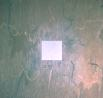
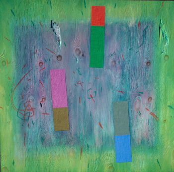
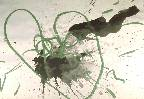
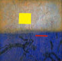
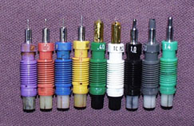
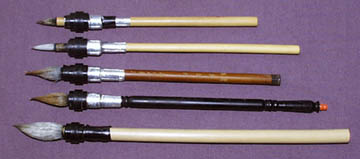
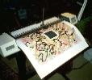

Roman Verostko [Algorithmic Artist]
Roman Verostko [Algorithmic Artist]
"Before embarking on this discussion let us establish a few definitions that apply in this paper. By art concept I mean an artist's ideas about how to make a work of art during a mature stylistic phase of development. By software art I mean software written or modified to carry out an art concept. Software art, as defined here, embodies the essential form-making capabilities of the artist, somewhat as a musical score embodies the musical ideas of a composer. By personal expert system I mean the software art and the hardware capable of processing unique art concepts of a particular artist - in this case, a personal computer, a plotter, and the artist's software."
The three types of theories and practice are the software foundation, software equivalent, and hardware. I'll be discussing the software foundation and hardware.
The first theory has to do with the software foundation. The project that Roman Verostko places into this is called "The Dance Between Order and Chaos". Verostko states, "For over 20 years my paintings played with a visual dialectic between control and uncontrol. The paintings presented visual opposites in a kind of dialectic between 'order' and chaos. The first works with this dialectic were executed between 1964 and 1968 on wooden panels with heavy grained wood."
 "Thus far we have been discussing how an 'art concept' can be coded when its formal system can be described. However, software in itself is something like a musical score. While all the musical ideas may be embodied in the score we still can't experience the music unless it is played on an instrument. The computer can be cabled to many different kinds of peripherals such as a printer, a plotter, a synthesizer, and a telephone."
Roman states, "Usually I review how the code is working through crude simulations on a monitor. But the pixels on the monitor have only a token relationship to paintings. While many artists get hard copy by photographing the monitor I prefer to work with a plotter. A plotter is a drawing machine which can execute drawing instructions sent to it by a computer. Such machines are commonly used for architectural and engineering drawing."
